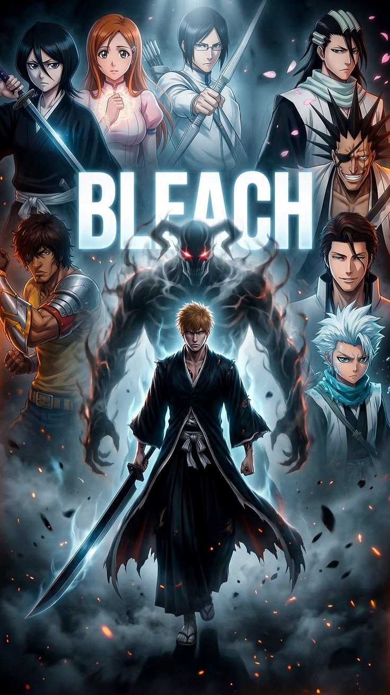

| AnimeSA | Home Top Anime Genres About |
Ichigo Kurosaki gains the powers of a Soul Reaper and protects humans from evil spirits while guiding souls to the afterlife.

Ichigo Kurosaki is a teenager who can see ghosts. His life changes when he meets Rukia Kuchiki, a Soul Reaper.
After gaining Soul Reaper powers, Ichigo protects the living world from Hollows and faces powerful enemies from other realms.
Contains action violence, supernatural elements, and intense battles.
Bleach became one of the legendary Big 3 anime, known for: